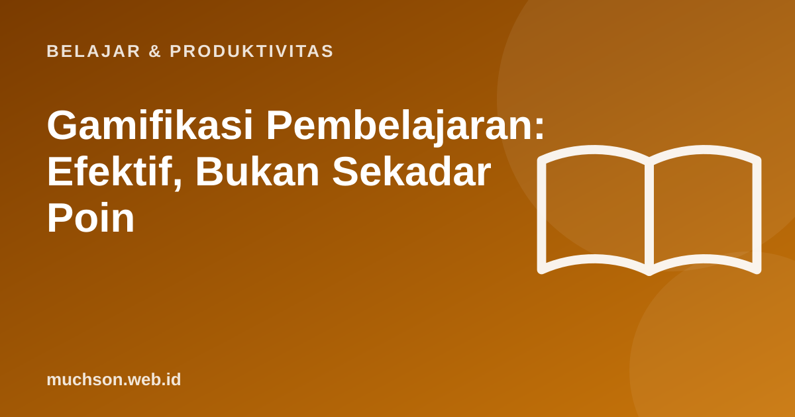

Beranda › Artikel › Belajar & Produktivitas
Belajar & ProduktivitasGamifikasi Pembelajaran: Efektif, Bukan Sekadar Poin
Poin, lencana, dan papan peringkat mudah ditambahkan, tetapi belum tentu membuat orang belajar. Gamifikasi yang berhasil memakai logika permainan untuk memperjelas tujuan, memberi umpan balik cepat, dan menjaga tantangan tetap pas.

Empat prinsip yang bekerja
Elemen dan fungsinya
| Elemen | Fungsi yang baik | Risiko |
|---|---|---|
| Level dan misi | Membagi materi menjadi tahap yang jelas | Terasa seperti daftar tugas bila tidak bermakna |
| Lencana | Menandai pencapaian yang bermakna | Dikejar demi koleksi bila terlalu mudah |
| Poin | Umpan balik atas usaha dan ketepatan | Mendorong menebak demi poin |
| Papan peringkat | Memotivasi peserta yang kompetitif | Mematahkan semangat pemula |
| Cerita atau skenario | Memberi konteks dan relevansi | Mengalihkan dari tujuan belajar bila berlebihan |
Uji desain gamifikasi Anda
Perlu diingat
Gamifikasi memperbesar yang sudah baik: materi yang jelas dan relevan. Pada materi yang membingungkan, poin dan lencana tidak akan menyelamatkannya.
Tanya jawab
Apa bedanya gamifikasi dan game-based learning?
Gamifikasi menambahkan unsur permainan ke aktivitas belajar. Game-based learning memakai permainan utuh sebagai media belajar.
Apakah gamifikasi cocok untuk semua usia?
Bisa, dengan penyesuaian. Orang dewasa sering lebih menghargai relevansi dan kemajuan nyata daripada hadiah kekanak-kanakan.
Bagaimana mengukur keberhasilannya?
Lihat penyelesaian, penguasaan (skor penilaian), dan keterlibatan jangka panjang, bukan hanya jumlah poin.